⬢ THIS IS NOT A PORTFOLIO. IT IS A PROOF.
Everything below runs in your browser, right now. No backend. No libraries. No frameworks. A compiler, a WebAssembly module emitted byte-by-byte, a raytracer, an N-body integrator, SHA-256 verified against NIST vectors, and a regex engine immune to catastrophic backtracking — all hand-written. Open DevTools. Read the source. Every claim is falsifiable.
⬢ FORGE — A REAL COMPILER, LIVE
Lexer → Pratt parser → AST → type checker → constant folding + dead-code elimination → bytecode → stack VM. Statically typed. Rust-style diagnostics with source-mapped carets. Edit the code, hit RUN.
⬢ WEBASSEMBLY — EMITTED BYTE BY BYTE
No Emscripten. No wasm-pack. No wat2wasm. This module was written as raw
LEB128-encoded bytes — section headers, type signatures, opcodes — then validated and instantiated
by your browser's own WASM engine.
loading module…
⬢ RAYTRACER — RECURSIVE, FROM SCRATCH
Ray-sphere intersection solved analytically. Recursive reflections, Fresnel falloff, hard shadows from three light sources, gamma-corrected output. Zero graphics libraries.
⬢ N-BODY — SYMPLECTIC INTEGRATION
200 gravitating bodies, ~19,900 pairwise force computations every frame, integrated with velocity-Verlet — a symplectic scheme that conserves total energy where naive Euler integration explodes. The drift number below is measured live.
⬢ SHA-256 — FIPS 180-4, HAND-IMPLEMENTED
Full message schedule, all 64 rounds, correct padding and big-endian length encoding.
Verified against the official NIST test vectors below — and against node:crypto on 200
random inputs during build.
⬢ REGEX ENGINE — THOMPSON NFA
Recursive-descent pattern parser → NFA construction → subset simulation with epsilon-closure. Linear time, O(n·m), always. No backtracking, so no ReDoS — ever.
⬢ SORTING LAB — INSTRUMENTED
Median-of-three quicksort with tail-call elimination, top-down mergesort, and an LSD radix sort — benchmarked against V8's native TimSort on identical data, with correctness verified after every run.
press RACE THEM
⬢ BENCHMARK YOUR MACHINE
Five real workloads, executed on your device by the code on this page. Nothing is pre-recorded.
press RUN FULL SUITE
⬢ LIVE SHELL — type help · Tab completes · ↑↓ history
⬢ UPSTREAM — WHAT ACTUALLY LANDED
The engines above prove I can build. This proves other maintainers merged it. Status is the real GitHub state — nothing upgraded for effect. Every row links to the diff.

Merged
| State | Org | Repository | Contribution | PR |
|---|---|---|---|---|
| MERGED | OWASP | Agent Memory Guard | GitHub Action — agent-memory vulnerability scanner | #18 |
| MERGED | OWASP | Agent Memory Guard | LlamaIndex integration adapter | #19 |
| MERGED | OWASP | Agent Memory Guard | CrewAI integration adapter | #20 |
| MERGED | OWASP | Agent Memory Guard | Prometheus metrics exporter | #21 |
| MERGED | OWASP | Agent Memory Guard | Policy.tiered() preset + memory-class taxonomy | #23 |
| MERGED | OWASP | Agent Memory Guard | source_type provenance flag on SecurityEvent | #24 |
| MERGED | OWASP | Agent Memory Guard | Multi-turn delayed-attack benchmark category | #42 |
| MERGED | nexu-io | open-design | legacy ~/.fnm path in toolchain resolution | #1110 |
| MERGED | Authora | auth | OTP login hardening, legacy-code removal | #3 |
| MERGED | HiveSofts | hive-app | backend refactor | #37 |
| MERGED | TaniCSS | Tani | v2.0 framework upgrade + full documentation | #1 |
| MERGED | MY-Jafari | flappy-2048 | 9 bug fixes — save persistence, hitbox correctness | #1 |
Under review upstream
Open PRs against projects where review cycles run in months. Listed because the diffs are public, not because they landed.
| State | Project | Repository | Contribution | PR |
|---|---|---|---|---|
| OPEN | LLVM | llvm/llvm-project | [X86] Prevent NUW flag forwarding in ADD→SUB peephole | #201612 |
| OPEN | LLVM | llvm/llvm-project | [CodeGenPrepare] Crash with asm goto / indirect branch | #201443 |
| OPEN | Go | golang/go | cmd/compile: size cache in StdSizes — kills exponential compile time | #79314 |
| OPEN | Apache SeaTunnel | apache/seatunnel | Reuse shared SinkWriter in multi-table sink | #11077 |
| OPEN | Apache Gravitino | apache/gravitino | View / ViewCatalog interfaces for the Python catalog | #11019 |
| OPEN | Meta · tritonparse | meta-pytorch/tritonparse | Customizable labels in file-diff view | #407 |
| OPEN | Sphinx | sphinx-doc/sphinx | source_language config + lang attribute | #14429 |
| OPEN | Canonical | canonical/documentation-style-guide | Migrate documentation wordlist to Vale accept.txt | #197 |
| OPEN | ASWF · rawtoaces | AcademySoftwareFoundation/rawtoaces | Prefer std::filesystem error_code over exceptions | #295 |
| OPEN | Lightning AI · LitServe | Lightning-AI/LitServe | Wait for worker setup in wrap_litserve_start | #682 |
| OPEN | bilibili · web-demuxer | bilibili/web-demuxer | Worker option for inline / main-thread runtime | #53 |
| OPEN | Telegram Desktop | telegramdesktop/tdesktop | Screen-reader announcements + accessible-name fallback | #31198 |
☠ Rejected patches — the ones that didn't make it
Listed because a record with no failures in it isn't a record.
- microsoft/TypeScript#63548 — private property access on generic intersection types
- typescript-go#4290 · #4291 — same fix, native port
- nasa-gibs/worldview#6699 — Service Worker tile caching for GIBS tiles
- nasa-gibs/worldview#6698 — iOS Canvas memory leak on colormap change
- tritonparse#405 — migrate zstandard → Python 3.14 stdlib zstd

⬢ LIVE ARSENAL — fresh from GitHub API
summoning repos…
⚡ RECENT COMBAT ACTIVITY
- listening for transmissions…
⬢ TRANSMISSIONS
Scheduled pipelines run on the profile repo (blog RSS · activity · WakaTime). This fortress is the static war-front — zero backend, nothing to kill.
⬢ ESTABLISH CONTACT
“Anyone can list technologies. I ship the implementations — and let you run them.”
⛓ GitHub · 🔗 LinkedIn · 📧 Email ·